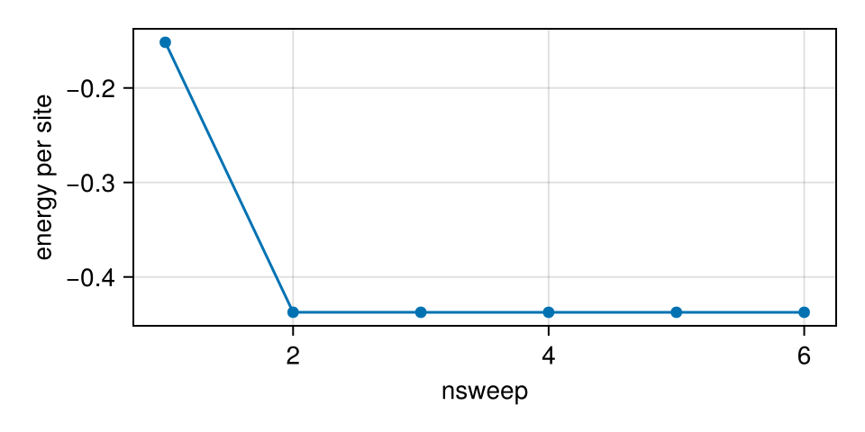
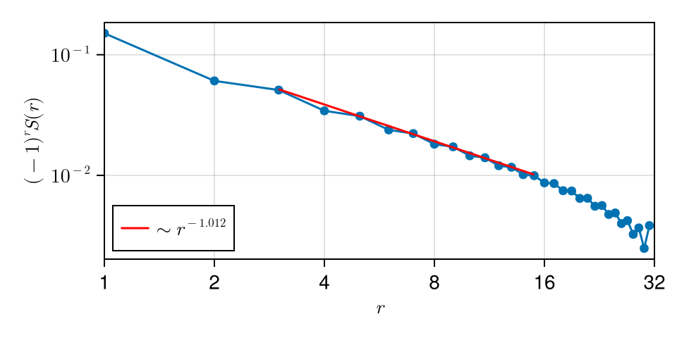
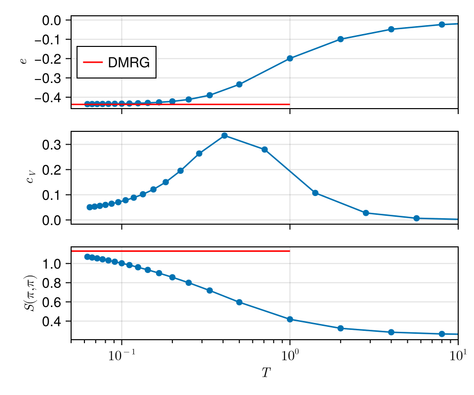
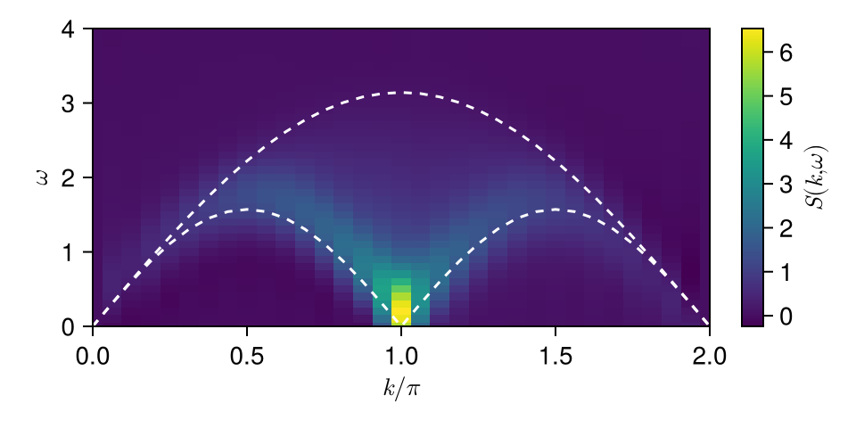

Heisenberg Chain
Ground state
In this section, we compute the ground-state, finite-T and dynamical properties of a Heisenberg chain, whose Hamiltonian reads
$H = J\sum_{i}S_{i} S_{i+1}$. Here we set $J=1$ as energy unit and use spin SU(2) symmetry.
using FiniteMPS
using CairoMakie, Statistics # visualization
using LsqFit: curve_fit
using NumericalIntegration: integrate
mkpath("figs_Heisenberg") # save figures
# parameters
L = 32
D = 128 # max bond dimension
# generate the Hamiltonian MPO
Tree = InteractionTree(L)
for i in 1:L-1
addIntr!(Tree, SU2Spin.SS, (i, i+1), (false, false), 1.0; name = (:S, :S))
end
H = AutomataMPO(Tree)SparseMPO{32}: total memory = 88.936 KiB
Bond 0-> 1: 1 -> 1
Bond 1-> 2: 2 -> 4
Bond 2-> 3: 3 -> 5
Bond 3-> 4: 3 -> 5
Bond 4-> 5: 3 -> 5
Bond 5-> 6: 3 -> 5
Bond 6-> 7: 3 -> 5
Bond 7-> 8: 3 -> 5
Bond 8-> 9: 3 -> 5
Bond 9->10: 3 -> 5
Bond 10->11: 3 -> 5
Bond 11->12: 3 -> 5
Bond 12->13: 3 -> 5
Bond 13->14: 3 -> 5
Bond 14->15: 3 -> 5
Bond 15->16: 3 -> 5
Bond 16->17: 3 -> 5
Bond 17->18: 3 -> 5
Bond 18->19: 3 -> 5
Bond 19->20: 3 -> 5
Bond 20->21: 3 -> 5
Bond 21->22: 3 -> 5
Bond 22->23: 3 -> 5
Bond 23->24: 3 -> 5
Bond 24->25: 3 -> 5
Bond 25->26: 3 -> 5
Bond 26->27: 3 -> 5
Bond 27->28: 3 -> 5
Bond 28->29: 3 -> 5
Bond 29->30: 3 -> 5
Bond 30->31: 3 -> 5
Bond 31->32: 2 -> 4
Here SU2Spin.SS is a predefined 2-tuple of rank-3 operators that represents the Heisenberg interaction $S_i\cdot S_j$. Next, we initialize a random state in $S_\textrm{tot}^z = 0$ sector.
# initialize a random state in S_tot = 0 sector
bspace = Rep[SU₂](0 => 1)
aspace = Rep[SU₂](i => 1 for i in 0:1/2:1)
Ψ = randMPS(fill(SU2Spin.pspace, L), vcat(bspace, fill(aspace, L-1)))MPS{32, Float64, StoreMemory}: Center = [1, 1], Norm = 1.0, total memory = 11.758 KiB
Bond 0-> 1: Rep[SU₂](0=>1), dim = 1 -> 1
Bond 1-> 2: Rep[SU₂](1/2=>1), dim = 1 -> 2
Bond 2-> 3: Rep[SU₂](0=>1, 1=>1), dim = 2 -> 4
Bond 3-> 4: Rep[SU₂](1/2=>1), dim = 1 -> 2
Bond 4-> 5: Rep[SU₂](0=>1, 1=>1), dim = 2 -> 4
Bond 5-> 6: Rep[SU₂](1/2=>1), dim = 1 -> 2
Bond 6-> 7: Rep[SU₂](0=>1, 1=>1), dim = 2 -> 4
Bond 7-> 8: Rep[SU₂](1/2=>1), dim = 1 -> 2
Bond 8-> 9: Rep[SU₂](0=>1, 1=>1), dim = 2 -> 4
Bond 9->10: Rep[SU₂](1/2=>1), dim = 1 -> 2
Bond 10->11: Rep[SU₂](0=>1, 1=>1), dim = 2 -> 4
Bond 11->12: Rep[SU₂](1/2=>1), dim = 1 -> 2
Bond 12->13: Rep[SU₂](0=>1, 1=>1), dim = 2 -> 4
Bond 13->14: Rep[SU₂](1/2=>1), dim = 1 -> 2
Bond 14->15: Rep[SU₂](0=>1, 1=>1), dim = 2 -> 4
Bond 15->16: Rep[SU₂](1/2=>1), dim = 1 -> 2
Bond 16->17: Rep[SU₂](0=>1, 1=>1), dim = 2 -> 4
Bond 17->18: Rep[SU₂](1/2=>1), dim = 1 -> 2
Bond 18->19: Rep[SU₂](0=>1, 1=>1), dim = 2 -> 4
Bond 19->20: Rep[SU₂](1/2=>1), dim = 1 -> 2
Bond 20->21: Rep[SU₂](0=>1, 1=>1), dim = 2 -> 4
Bond 21->22: Rep[SU₂](1/2=>1), dim = 1 -> 2
Bond 22->23: Rep[SU₂](0=>1, 1=>1), dim = 2 -> 4
Bond 23->24: Rep[SU₂](1/2=>1), dim = 1 -> 2
Bond 24->25: Rep[SU₂](0=>1, 1=>1), dim = 2 -> 4
Bond 25->26: Rep[SU₂](1/2=>1), dim = 1 -> 2
Bond 26->27: Rep[SU₂](0=>1, 1=>1), dim = 2 -> 4
Bond 27->28: Rep[SU₂](1/2=>1), dim = 1 -> 2
Bond 28->29: Rep[SU₂](0=>1, 1=>1), dim = 2 -> 4
Bond 29->30: Rep[SU₂](1/2=>1), dim = 1 -> 2
Bond 30->31: Rep[SU₂](0=>1, 1=>1), dim = 2 -> 4
Bond 31->32: Rep[SU₂](1/2=>1), dim = 1 -> 2
Here bspace = Rep[SU₂](0 => 1) is the space of left boundary bond, 0 is the SU(2) quantum number of the total MPS, and 1 is the multiplicity of the trivial representation, therefore this setup indicates the total MPS is a SU(2) scalar.
aspace is the space of bulk bonds. Note the fusion of physical space and bond space leads to a constrain due to symmetry. For example, the SU(2) quantum numbers of the bonds exhibit a integer/half integer oscillation, as the physical space exactly shifts the bond quantum number by 1/2. Here we use a larger (with redundancy) initial bond space so that contraction of bond indices gives a non-vanished result.
# DMRG
NSweeps = 5
Env = Environment(Ψ', H, Ψ)
lsE = [scalar!(Env)] # initial energy
for nsweep in 1:NSweeps
info, TO = DMRGSweep2!(Env; K = 16, trunc = truncdim(D))
push!(lsE, info[2][1].Eg)
end
Eg = lsE[end]-13.997315618224969Here we first construct the tri-layer environment to store the environment tensors of the local 2-site projective Hamiltonian in MPS-based DMRG. scalar! method triggers full contraction of the total tri-layer tensor network thus gives the initial energy.
Then we perform NSweep times 2-DMRG sweeping via the key function DMRGSweep2!, where K = 16 is the Krylov space dimension and trunc = truncdim(D) is a TensorKit.jl syntax that determines the truncation scheme, i.e. keep up to D bond dimension. Returned info stores the information of a DMRG sweep and TO is a TimerOutput object contains the time usage. Here we directly extract the energy from the output information, one can also use scalar! again.
# plot the energy vs nsweep
fig = Figure(size = (480, 240))
ax = Axis(fig[1, 1];
xlabel = "nsweep",
ylabel = "energy per site")
scatterlines!(ax, lsE / L) # per site
save("figs_Heisenberg/GS_energy.png", fig)
Then we compute the ground-state spin correlations.
# compute spin correlations
ObsTree = ObservableTree(L)
for i in 1:L, j in i:L
addObs!(ObsTree, SU2Spin.SS, (i, j), (false, false); name = (:S, :S))
end
calObs!(ObsTree, Ψ)
Obs = convert(Dict, ObsTree)
# average spin correlation with AFM correction
lsr = 1:L-1
lsSr = map(lsr) do r
(-1.0) ^ r * mean(1:L-r) do i
# note SU2Spin.SS corresponds to S⋅S
Obs["SS"][(i, i + r)] / 3
end
end
# plot
fig = Figure(size = (480, 240))
ax = Axis(fig[1, 1];
xlabel = L"r",
ylabel = L"(-1)^r S(r)",
xscale = log10,
yscale = log10,
limits = (1, L, nothing, nothing),
xticks = 2.0 .^ (0:1:log(L)/log(2)),
yticks = (10.0 .^ (-3:1:0), [L"10^{-3}", L"10^{-2}", L"10^{-1}", L"10^{0}"]),
)
scatterlines!(ax, lsr, lsSr)
# fit
ids = 3:2:div(L, 2)
lsx = log.(lsr[ids])
lsy = log.(lsSr[ids])
@. model(x, p) = p[1] + p[2] * x
fit = curve_fit(model, lsx, lsy, [-log(4), -1])
lines!(ax, exp.(lsx), exp.(model(lsx, fit.param));
color = :red,
label = L"\sim r^{%$(round(fit.param[2]; digits = 3))}"
)
axislegend(ax; position = (0, 0))
save("figs_Heisenberg/GS_Sr.png", fig) We reproduce the algebraic decay behaver $ (-1)^rS(r) \sim 1/r. $
Finite temperature
Now we move to the finite-temperature properties via tanTRG, which belongs to an imaginary-time-evolution method based on TDVP of MPO. Note we will use CBE-TDVP to accelerate the computation.
# define a beta list
lsβ = vcat(2.0 .^ (-15:0), 2:16)
lslnZ = fill(NaN, length(lsβ))
lsE = fill(NaN, length(lsβ))
lsSM = fill(NaN, length(lsβ)) # AFM struct factor S(pi, pi)
# compute S(pi, pi) at ground state for comparison
calObs!(ObsTree, Ψ)
Obs = convert(Dict, ObsTree)
function calSM(Obs::Dict)
return sum([(i, j) for i in 1:L for j in i:L]) do (i, j)
Sij = (-1.0)^abs(i - j) * Obs["SS"][(i, j)] / (3*L)
return i == j ? Sij : 2 * Sij
end
end
SM_GS = calSM(Obs)
# SETTN
ρ, lsF_SETTN = SETTN(H, lsβ[1];
CBEAlg = NaiveCBE(D + div(D, 4), 1e-8; rsvd = true),
lsnoise = [0.01, 0.001], tol = 1e-12,
trunc = truncdim(D) & truncbelow(1e-16),
)
lslnZ[1] = 2 * log(norm(ρ))
normalize!(ρ)
# generate the trilayer environment
Env = Environment(ρ', H, ρ)
lsE[1] = scalar!(Env)
calObs!(ObsTree, ρ)
Obs = convert(Dict, ObsTree)
lsSM[1] = calSM(Obs)0.2500036955434818First we define a $\beta$ list, which determines the step length of imaginary-time cooling. SETTN is adopted to initialize a high-temperature MPO, where CBEAlg indicates the algorithm to implement CBE. Currently only NaiveCBE is valid, where we directly find the optimal subspace via a svd (use random svd to accelerate), and the expanded bond dimension is set as D + div(D, 4). lsnoise sets the noise applied in the first several sweeps of variational multiplication. Next we use TDVP to cool down the system.
# TDVP cooling
for idx in 2:length(lsβ)
dβ = lsβ[idx] - lsβ[idx-1]
TDVPSweep1!(Env, -dβ / 2;
CBEAlg = NaiveCBE(D + div(D, 4), 1e-8; rsvd = true),
trunc = truncdim(D), GCsweep = true,
)
lslnZ[idx] = lslnZ[idx-1] + 2 * log(norm(ρ))
normalize!(ρ)
lsE[idx] = scalar!(Env)
# update data stored in ObsTree
calObs!(ObsTree, ρ)
lsSM[idx] = calSM(convert(Dict, ObsTree))
endThe key function in this part is TDVPSweep1! that performs a single left-to-right and right-to-left 1-TDVP sweep. GCsweep = true indicates that a manual GC.gc() is called per sweep. If you suffer memory problem when using FiniteMPS.jl, the first thing to try is setting CGsweep = true and a stronger GCstep = true in the main sweeping function (e.g. DMRGSweep1! and TDVPSweep1!).
In each sweep, the normalization factor after an imaginary-time evolution is extracted to calculate the partition function lnZ. In order to calculate spin correlations, regenerating ObsTree is not necessary, just use calObs! again to trigger the in-place update with the new MPO ρ.
Below is a simple script for visualization, where the temperature dependence of energy $e$, specific heat $c_V$ and AFM structure factor $S(\pi, \pi)$ are shown.
# visualization
# compute C = - ∂S / ∂lnβ
lsS = lsβ .* lsE .+ lslnZ
lslnβ = log.(lsβ)
lsCv = - diff(lsS) ./ diff(lslnβ)
lsβ_c = exp.((lslnβ[1:end-1] + lslnβ[2:end])/2)
fig = Figure(size = (480, 400))
ax1, ax2, ax3 = map(1:3, [L"e", L"c_V", L"S(\pi, \pi)"]) do idx, ylabel
ax = Axis(fig[idx, 1];
xlabel = L"T",
ylabel = ylabel,
xscale = log10,
limits = (0.05, 10, nothing, nothing),
xticks = (10.0 .^ (-2:1:1), [L"10^{-2}", L"10^{-1}", L"10^0", L"10^1"]),
xminorticks = vcat(0.02:0.01:0.09, 0.2:0.1:0.9, 2:9),
xminorticksvisible = true)
idx < 3 && hidexdecorations!(ax; grid = false, ticks = false)
ax
end
scatterlines!(ax1, 1 ./ lsβ, lsE ./ L)
lines!(ax1, [0.05, 1], [Eg/L, Eg/L]; color = :red, label = "DMRG")
axislegend(ax1; position = (0, 0.5))
scatterlines!(ax2, 1 ./ lsβ_c, lsCv ./ L)
scatterlines!(ax3, 1 ./ lsβ, lsSM)
lines!(ax3, [0.05, 1], [SM_GS, SM_GS]; color = :red)
save("figs_Heisenberg/FiniteT.png", fig) From this example we see that the low-temperature limit of tanTRG does shake hands with the ground state DMRG.
Spin dynamics
In this section we will compute the ground-state dynamical spin structure factor (DSF) $S(k,\omega) = \sum_{i = 1}^L e^{-ik(r_i-r_j)} \int_{-\infty}^\infty dt e^{i\omega t}\langle S_i^z(t)S_j^z\rangle$, where $j$ is chosen as a reference site. More specifically, we will use TDVP to compute $\langle S_i^z(t)S_j^z\rangle = e^{iE_gt}\langle \Psi| S_i^z |\Phi(t)\rangle$ where $|\Phi(t)\rangle = e^{-iHt}S_j^z|\Psi\rangle$.
lst = 0:1.0:10 # time list
matSijt = zeros(ComplexF64, L, length(lst)) # S_{i,j_ref}(t)
# obtain |Φ(0)⟩ = S_j|Ψ⟩
j_ref = div(L, 2)
# fuse the additional bonds due to non-abelian symmetry
aspace_S = codomain(SU2Spin.SS[2])[1]
aspace_Ψ = codomain(Ψ[1])[1]
aspace_Φ = fuse(aspace_S, aspace_Ψ)
# wrap the operator S_j to a MPO
Tree = InteractionTree(L)
addIntr!(Tree, SU2Spin.SS[2], j_ref, 1.0; name = :S)
S_MPO = AutomataMPO(Tree)
# note Φ should be a complex MPS
Φ = randMPS(ComplexF64, fill(SU2Spin.pspace, L), vcat(aspace_Φ, fill(aspace, L - 1)))
# variationally find |Φ⟩ = S_j|Ψ⟩
mul!(Φ, S_MPO, Ψ;
CBEAlg = NaiveCBE(D + div(D, 4), 1e-8; rsvd = true),
trunc = truncdim(D), GCsweep = true,
lsnoise = [0.1, 0.01, 0.001], tol = 1e-12,
)MPS{32, ComplexF64, StoreMemory}: Center = [1, 1], Norm = 0.8660254035294429, total memory = 315.141 KiB
Bond 0-> 1: Rep[SU₂](1=>1), dim = 1 -> 3
Bond 1-> 2: Rep[SU₂](1/2=>1, 3/2=>1), dim = 2 -> 6
Bond 2-> 3: Rep[SU₂](0=>1, 1=>2, 2=>1), dim = 4 -> 12
Bond 3-> 4: Rep[SU₂](1/2=>3, 3/2=>3, 5/2=>1), dim = 7 -> 24
Bond 4-> 5: Rep[SU₂](0=>3, 1=>6, 2=>4, 3=>1), dim = 14 -> 48
Bond 5-> 6: Rep[SU₂](1/2=>9, 3/2=>10, 5/2=>5, 7/2=>1), dim = 25 -> 96
Bond 6-> 7: Rep[SU₂](0=>8, 1=>14, 2=>11, 3=>3), dim = 36 -> 126
Bond 7-> 8: Rep[SU₂](1/2=>13, 3/2=>13, 5/2=>7, 7/2=>1), dim = 34 -> 128
Bond 8-> 9: Rep[SU₂](0=>8, 1=>15, 2=>10, 3=>3), dim = 36 -> 124
Bond 9->10: Rep[SU₂](1/2=>13, 3/2=>14, 5/2=>6, 7/2=>1), dim = 34 -> 126
Bond 10->11: Rep[SU₂](0=>8, 1=>15, 2=>10, 3=>3), dim = 36 -> 124
Bond 11->12: Rep[SU₂](1/2=>13, 3/2=>14, 5/2=>6, 7/2=>1), dim = 34 -> 126
Bond 12->13: Rep[SU₂](0=>9, 1=>15, 2=>10, 3=>3), dim = 37 -> 125
Bond 13->14: Rep[SU₂](1/2=>14, 3/2=>14, 5/2=>6, 7/2=>1), dim = 35 -> 128
Bond 14->15: Rep[SU₂](0=>9, 1=>17, 2=>10, 3=>2), dim = 38 -> 124
Bond 15->16: Rep[SU₂](1/2=>16, 3/2=>16, 5/2=>5), dim = 37 -> 126
Bond 16->17: Rep[SU₂](0=>11, 1=>20, 2=>10, 3=>1), dim = 42 -> 128
Bond 17->18: Rep[SU₂](1/2=>18, 3/2=>17, 5/2=>4), dim = 39 -> 128
Bond 18->19: Rep[SU₂](0=>11, 1=>20, 2=>10, 3=>1), dim = 42 -> 128
Bond 19->20: Rep[SU₂](1/2=>18, 3/2=>17, 5/2=>4), dim = 39 -> 128
Bond 20->21: Rep[SU₂](0=>11, 1=>20, 2=>10, 3=>1), dim = 42 -> 128
Bond 21->22: Rep[SU₂](1/2=>18, 3/2=>17, 5/2=>4), dim = 39 -> 128
Bond 22->23: Rep[SU₂](0=>11, 1=>20, 2=>10, 3=>1), dim = 42 -> 128
Bond 23->24: Rep[SU₂](1/2=>17, 3/2=>16, 5/2=>5), dim = 38 -> 128
Bond 24->25: Rep[SU₂](0=>11, 1=>20, 2=>10, 3=>1), dim = 42 -> 128
Bond 25->26: Rep[SU₂](1/2=>14, 3/2=>14, 5/2=>6, 7/2=>1), dim = 35 -> 128
Bond 26->27: Rep[SU₂](0=>5, 1=>9, 2=>5, 3=>1), dim = 20 -> 64
Bond 27->28: Rep[SU₂](1/2=>5, 3/2=>4, 5/2=>1), dim = 10 -> 32
Bond 28->29: Rep[SU₂](0=>2, 1=>3, 2=>1), dim = 6 -> 16
Bond 29->30: Rep[SU₂](1/2=>2, 3/2=>1), dim = 3 -> 8
Bond 30->31: Rep[SU₂](0=>1, 1=>1), dim = 2 -> 4
Bond 31->32: Rep[SU₂](1/2=>1), dim = 1 -> 2
Note we cannot directly compute $\langle S_i^z(t)S_j^z\rangle$, as the operator $S^z$ breaks the SU(2) symmetry. Therefore, what we actually compute is $\langle S_i(t) \cdot S_j\rangle / 3$, where $S_j$ operator is a SU(2) spinor with an additional index that labels the representation space. After preparing the initial Φ with correct symmetry index, we call mul! function to perform variational multiplication.
# define a new ObsTree to calculate each inner product ⟨Ψ|S_i|Φ⟩
ObsTree = ObservableTree(L)
for i in 1:L
addObs!(ObsTree, SU2Spin.SS[1], i; name = :S)
end
iso = isometry(aspace_Φ, aspace_S ⊗ aspace_Ψ)
El = permute(iso', ((2, 1), (3,)))
calObs!(ObsTree, Ψ, Φ; El = El)
matSijt[:, 1] = [ObsTree.Refs["S"][(i,)][] / 3 for i in 1:L]32-element Vector{ComplexF64}:
-0.011762564964430783 - 1.6525460581242935e-17im
0.007678317422078539 + 9.514659122533811e-18im
-0.014729592522709051 - 2.1032404376127373e-17im
0.011018256873999125 + 1.4021602917418247e-17im
-0.017783160483631624 - 2.6040119703776746e-17im
0.014218471473970882 + 1.929070729219932e-17im
-0.021667439779459535 - 2.433618240264898e-17im
0.018163377553368307 + 1.6655876202206457e-17im
-0.0273842486893151 - 3.564362649777699e-17im
0.02397641826667747 + 3.3686513449097615e-17im
⋮
0.01895965259847153 + 3.73225647653067e-18im
-0.013344102784460304 + 5.0190662815056105e-18im
0.015429146429034195 - 6.807461161695829e-19im
-0.010484575356473168 + 8.931117681942268e-19im
0.012873407653913795 + 2.1150063921516082e-19im
-0.008132861965897806 - 1.7834177883344991e-19im
0.010767614568035386 + 7.935451048367339e-19im
-0.005662695949181431 - 4.663131817363142e-19im
0.008643251199145918 + 9.079506382006704e-19imEmphasize that the isometry to fuse the space of $S_j$ and $|\Psi\rangle$ must be considered carefully. We exactly insert a pair of isometries without changing the contraction result. One is implicitly applied in mul! to fuse the two additonal indices to the new one of Φ, and the other becomes the left boundary environment tensor El sent to calObs!.
# time evolution
# construct the trilayer environment for TDVP
Env = Environment(Φ', H, Φ)
# time evolution
for idx in 2:length(lst)
dt = lst[idx] - lst[idx-1]
TDVPSweep1!(Env, -im * dt;
CBEAlg = NaiveCBE(D + div(D, 4), 1e-8; rsvd = true),
GCsweep = true, trunc = truncdim(D)
)
calObs!(ObsTree, Ψ, Φ; El = El)
# e^{iEgt}⟨Ψ|S_i^+|Φ⟩
matSijt[:, idx] = exp(im * Eg * lst[idx]) * map(1:L) do i
ObsTree.Refs["S"][(i,)][] / 3
end
endIn this part we use CBE-TDVP to perform real-time evolution of Φ and calculate the time-dependent spin correlations as some inner products.
# spatial FT
lsk = 0:2/L:2 # unit = π
matcoef = map([(k, i) for k in lsk, i in 1:L]) do (k, i)
exp(-im * k * (i - j_ref) * π)
end
matSkt = matcoef * matSijt
# time FT
lsω = 0:0.1:4 # frequency list
# use a Parzen window to suppress the non-physical oscillation
function ParzenWindow(x::Float64)
if abs(x) < 1 / 2
return 1 - 6 * x^2 + 6 * abs(x)^3
elseif abs(x) < 1
return 2 * (1 - abs(x))^3
else
return 0.0
end
end
lsWt = ParzenWindow.(lst ./ maximum(lst))
matSkω = zeros(length(lsk), length(lsω))
for iω in 1:length(lsω)
lscoef = exp.(im * lsω[iω] .* lst) .* lsWt
for ik in 1:length(lsk)
matSkω[ik, iω] = 2 * integrate(lst, real.(matSkt[ik, :] .* lscoef))
end
endAfter collecting all real-space time-dependent spin correlations, we perform FT to obtain the DSF. Note time-reversal symmetry is used in the numerical integration so that only $t>0$ data is required. Moreover, we multiply a parzen window function to the time domain to suppress the non-physical oscillation in frequency domain.
# visualization
fig = Figure(size = (480, 240))
ax = Axis(fig[1, 1];
xlabel = L"k / \pi",
ylabel = L"\omega",
limits = ((0, 2), extrema(lsω))
)
hm = heatmap!(ax, lsk, lsω, matSkω)
Colorbar(fig[1, 2], hm; label = L"S(k, \omega)")
# upper and lower boundaries
lsω_upper = π .* sin.(lsk .* (π/2))
lsω_lower = (π/2) .* abs.(sin.(lsk .* π))
lines!(ax, lsk, lsω_upper; color = :white, linestyle = :dash)
lines!(ax, lsk, lsω_lower; color = :white, linestyle = :dash)
save("figs_Heisenberg/Skomega.png", fig) The exact (thermodynamical limit) upper and lower boundaries are also shown. Our numerial results align well with them, up to the frequency resolution (FWHM $\approx 8 / t_\textrm{max}$) due to the finite evolution time $t_\textrm{max} = 10$.